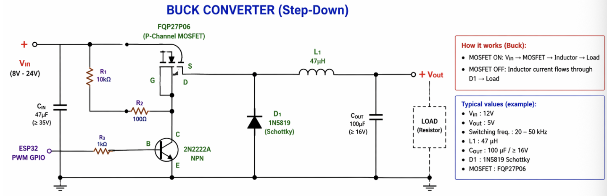
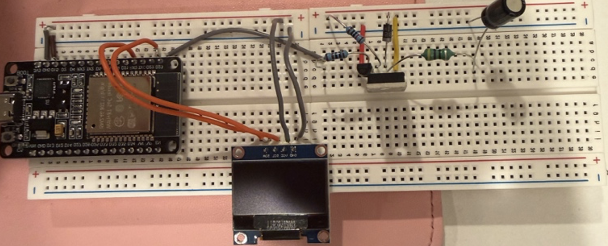
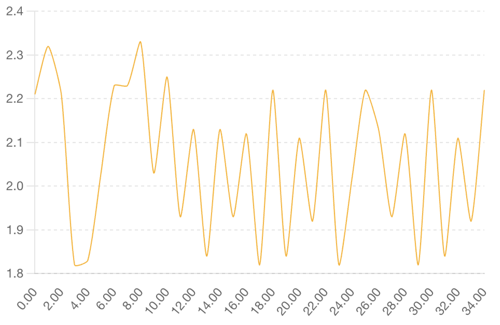

Introduction to Buck Converters
A buck converter is a type of DC-DC converter that steps down voltage from a higher level to a lower level. It is widely used in power supply applications where efficient voltage reduction is required.
Power Stage Components
- ESP32: The microcontroller that manages the switching operations and controls the converter's behavior.
- PN2222: A bipolar junction transistor used for switching applications.
- MOSFET FQP27P06: A power MOSFET used for switching applications.
- Diode 1N5819: A fast-recovery diode used for rectification and protection.
- Inductor: A passive component that stores energy in a magnetic field when electric current flows through it.
- Capacitor: A passive component that stores energy in an electric field, used for filtering and energy storage in the converter.
- Resistors: Used for current sensing, voltage division, and other circuit functions.
How to Build a Buck Converter
Building a buck converter involves several steps, from component selection to assembly and testing. This guide provides a step-by-step approach to constructing a functional buck converter.

- 1. Design the Circuit: Start by designing the buck converter circuit, including the power stage and control circuitry. Use simulation tools to verify the design before physical assembly
- 2. Select Components: Choose the appropriate components based on the design requirements, such as voltage and current ratings, switching frequency, and efficiency targets.
- 3. Assemble the Circuit: Carefully assemble the components on a breadboard or PCB, following the circuit design. Ensure proper connections and soldering to avoid issues during testing.
- 4. Test the Converter: Power up the circuit and measure the output voltage and current to verify that the buck converter is functioning correctly. Adjust component values as needed to achieve the desired performance.

How It Works
The buck converter operates by rapidly switching the input voltage on and off, controlling the energy transferred to the output through an inductor and capacitor. When the switch is closed, current flows through the inductor, storing energy in its magnetic field. When the switch opens, the inductor releases this energy to the output, maintaining a stable voltage while stepping down from a higher input voltage. The diode provides a path for the inductor current when the switch is open, ensuring continuous current flow and preventing voltage spikes. The control circuitry, managed by the ESP32, regulates the switching frequency and duty cycle to maintain the desired output voltage under varying load conditions.
